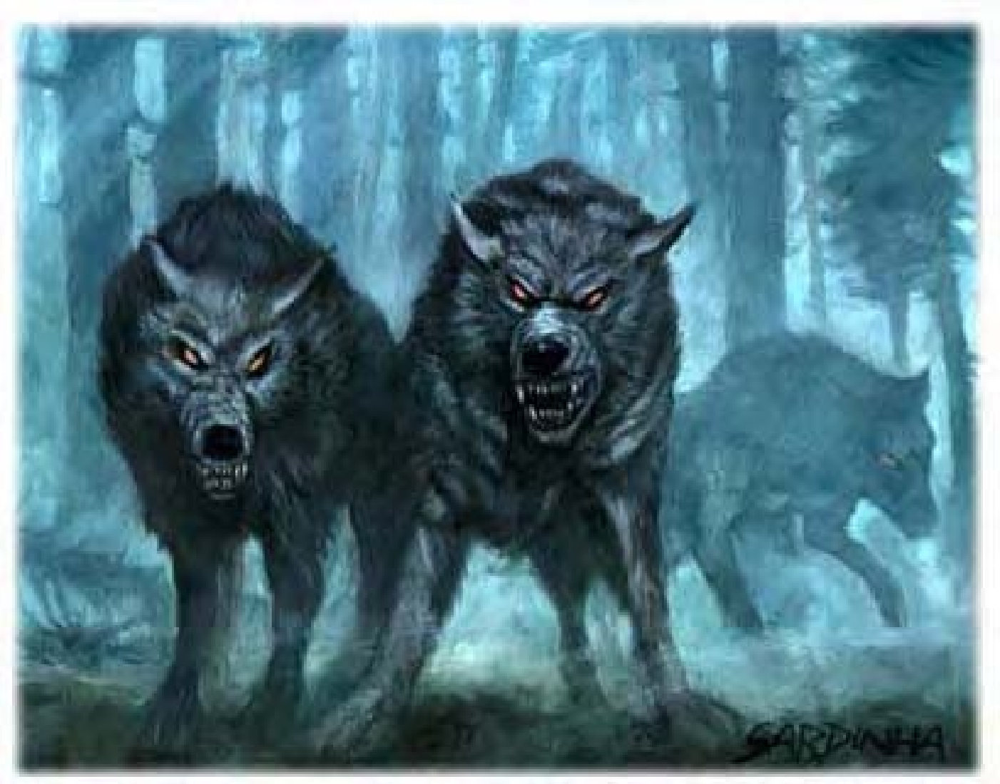

座狼外型就像深黑色的狼，但眼光和表情凶残而有智慧。
座狼生性邪恶而且智力不低，有时会和其他邪恶生物结盟，担任座骑或守卫的工作。
座狼生活和狩猎时习惯成群结队，偏好猎捕大型草食动物，但通常只会追杀幼小、生病或体衰者。他们也会主动攻击人形生物，尤其在食物缺乏时。攻击之前，座狼通常会跟踪猎物数小时甚至数天，找寻最适当的环境或时机才会一举发动攻势 (例如：在破晓时分攻击)。
座狼毛色有黑或灰色，体长可达5英尺，肩高3英尺，重300磅。
座狼比一般狼类聪明，具有自己的语言，有些也通晓通用语或地精语。
围捕体型较大的生物时，座狼通常会跟配偶或成群一同出击。独行的座狼则会追猎体型比本身小的生物。无论何种情况，座狼偏好使用连打带跑战术，慢慢拖垮敌人。
座狼群围攻敌人时，每只会轮流进行啮咬攻击然后立刻撤退，拖垮对手体力，最后才一涌而上。如果时间紧迫或数量众多，座狼也会尝试压制敌人。
阻绊 (特异)：座狼一旦用啮咬攻击命中目标，就可试着直接以即时动作阻绊对方 (+3检定调整值)，无须进行接触攻击，也不会引发借机攻击。即使失败了，对手也不能反过来阻绊座狼。
技能：座狼在进行「聆听」、「潜行」和「侦察」检定时具有+1种族加值，在进行「躲藏」检定时具有+2种族加值。
*利用嗅觉进行追踪时，「生存」检定具有+4种族加值。
| 生命骰 | 4d10+8 (30HP) |
| 先攻 | +2 |
| 速度 | 50英尺 (10格) |
| 防御等级 | 14 (+2敏捷、+2天生)、接触12、措手不及12 |
| 基本攻击/擒抱 | +4 / +7 |
| 攻击 | 啮咬+7近战 (1d6+4) |
| 全力攻击 | 啮咬+7近战 (1d6+4) |
| 占据/触及 | 5英尺 / 5英尺 |
| 特殊攻击 | 阻绊 |
| 特殊能力 | 黑暗视觉60英尺、昏暗视觉、灵敏嗅觉 |
| 豁免 | 强韧+6、反射+6、意志+3 |
| 属性 | 力量17、敏捷15、体质15、智力6、感知14、魅力10 |
| 技能 | 躲藏+4、聆听+6、潜行+6、侦察+6、生存+2* |
| 专长 | 警觉、追踪 |
| 环境 | 温带平原 |
| 组织 | 单独、成双或一批 (6-11) |
| 宝藏 | 十分之一钱币、50%宝物、50%物品 |
| 阵营 | 通常中立邪恶 |
| 进化 | 5-6HD (中型)；7-12HD (大型) |
| 等级修正值 | +1 (部属) |